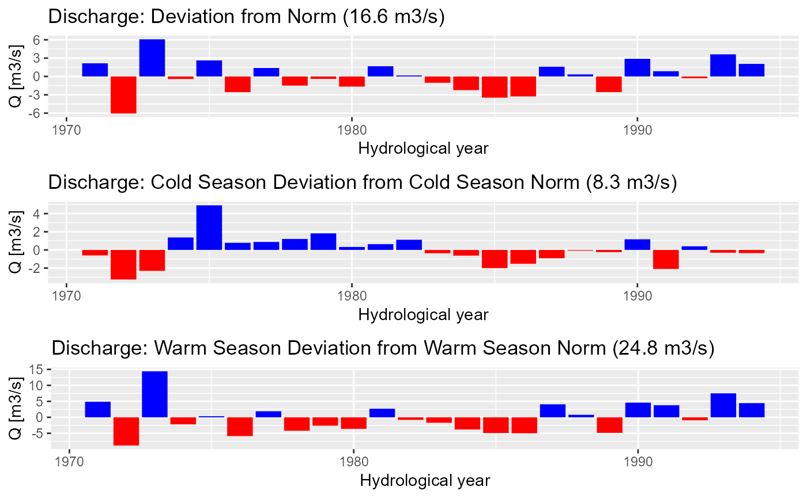

Discharge processing examples
Source:vignettes/01-discharge-processing-examples.Rmd
01-discharge-processing-examples.RmdThe pre-processing functions support the data loading and preparation of climate data input for hydrological modeling with RS Minerve. The following code snippets demonstrate how to load tabular discharge data and use some of the functions of riversCentralAsia to perform some basic discharge analysis.
Here we only provide a quick overview. Please refer to the open-source book Modeling of Hydrological Systems in Semi-Arid Central Asia for more details on how to use the riversCentralAsia package in hydrological modelling.
library(tidyverse)
#> ── Attaching packages ─────────────────────────────────────── tidyverse 1.3.2 ──
#> ✔ ggplot2 3.3.6 ✔ purrr 0.3.4
#> ✔ tibble 3.1.8 ✔ dplyr 1.0.9
#> ✔ tidyr 1.2.0 ✔ stringr 1.4.0
#> ✔ readr 2.1.2 ✔ forcats 0.5.1
#> ── Conflicts ────────────────────────────────────────── tidyverse_conflicts() ──
#> ✖ dplyr::filter() masks stats::filter()
#> ✖ dplyr::lag() masks stats::lag()
library(lubridate)
#>
#> Attaching package: 'lubridate'
#>
#> The following objects are masked from 'package:base':
#>
#> date, intersect, setdiff, union
library(timetk)
library(riversCentralAsia)
discharge <- loadTabularData(
fPath = "../../atbashy_glacier_demo_data/DISCHARGE/",
fName = "16076_Q.csv",
code = 16076,
stationName = "Unknown",
rName = "Atbashy",
rBasin = "Naryn",
dataType = "Q",
unit = "m3/s") |>
# The data is missing the last 3 months of 1995. We drop them here.
drop_na()
#> Warning: The `x` argument of `as_tibble.matrix()` must have unique column names if `.name_repair` is omitted as of tibble 2.0.0.
#> Using compatibility `.name_repair`.
#> This warning is displayed once every 8 hours.
#> Call `lifecycle::last_lifecycle_warnings()` to see where this warning was generated.
discharge
#> # A tibble: 308 × 10
#> date data norm units type code station river basin resolution
#> <date> <dbl> <dbl> <chr> <chr> <chr> <chr> <chr> <chr> <fct>
#> 1 1970-01-31 6.43 7.12 m3/s Q 16076 Unknown Atbashy Naryn mon
#> 2 1970-02-28 6.15 6.71 m3/s Q 16076 Unknown Atbashy Naryn mon
#> 3 1970-03-31 6.72 6.89 m3/s Q 16076 Unknown Atbashy Naryn mon
#> 4 1970-04-30 14.2 13.0 m3/s Q 16076 Unknown Atbashy Naryn mon
#> 5 1970-05-31 36 27.8 m3/s Q 16076 Unknown Atbashy Naryn mon
#> 6 1970-06-30 45.2 37.4 m3/s Q 16076 Unknown Atbashy Naryn mon
#> 7 1970-07-31 37.9 33.1 m3/s Q 16076 Unknown Atbashy Naryn mon
#> 8 1970-08-31 37.5 22.7 m3/s Q 16076 Unknown Atbashy Naryn mon
#> 9 1970-09-30 20 15.4 m3/s Q 16076 Unknown Atbashy Naryn mon
#> 10 1970-10-31 11 11.4 m3/s Q 16076 Unknown Atbashy Naryn mon
#> # … with 298 more rows
#> # ℹ Use `print(n = ...)` to see more rowsThe package timetk is a useful tool for time series
analysis. The following two figures show examples of quick diagnostics
plots that can be drawn with that package.
discharge %>%
plot_time_series(date,
data,
.smooth = FALSE,
.interactive = TRUE,
.title = "",
.x_lab = 'Year',
.y_lab = 'Mean monthly Q [m3/s]',
.plotly_slider = TRUE)Interactive time series plot of monthly discharge measurements.
discharge |>
plot_seasonal_diagnostics(.date_var = date,
.value = data,
.title = "",
.feature_set = c("month.lbl"),
.interactive = FALSE,
.x_lab = "Year",
.y_lab = "Mean monthly Q [m3/s]") +
scale_x_discrete(breaks = c("January", "February", "March", "April", "May",
"June", "July", "August", "September", "October",
"November", "December", "1", "2", "3", "4"),
labels = c("J", "F", "M", "A", "M", "J", "J", "A", "S", "O",
"N", "D","1", "2", "3", "4"))Monthly box plot of the time series data showing the mean (bold horizontal line), the boundaries of the 25% and the 75% quantiles (boundaries of the box). The lines extend to roughly 95% confidence interval and the points indicate outliers.
discharge %>%
summarise_by_time(.date_var = date,
.by = "month",
value = mean(data)) %>%
tk_ts(frequency = 12) %>%
forecast::ggsubseriesplot(year.labels = FALSE) +
geom_smooth(method = "lm", color = "red", formula = y ~ x) +
xlab('Month') +
ylab('Mean monthly Q [m3/s]') +
theme_bw()
#> Registered S3 method overwritten by 'quantmod':
#> method from
#> as.zoo.data.frame zoo
#> Warning: Non-numeric columns being dropped: dateVisualization of trends in the monthly data. The blue line indicates the monthly mean and the red line shows the result of a linar model of the monthly data, including a grey confidence interval of the fit.
For many applications, discharge data is processed within the hydrolgoical year. In Central Asia, the hydrological year starts on October 1 of the previous year and ends on September 30 of the current year. Hydrologists also differentiate between cold and warm season discharge. The following function calculates mean annual discharges (ann) as well as mean cold and warm season discharge (cs and ws respectively).
discharge_processed <- convert2HYY(discharge, 16076, "Q")
discharge_processed |> pivot_longer(-hyYear) |>
plot_time_series(hyYear,value,name,
.title = '',
.x_lab = 'Year',
.y_lab = 'Mean monthly Q [m3/s]',
.interactive = TRUE,
.smooth = FALSE)Mean annual (ann), cold (cs) and warm season (ws) discharge.
plotNormDevHYY(discharge_processed, "Q", "Discharge")
#> Warning: It is deprecated to specify `guide = FALSE` to remove a guide. Please use `guide = "none"` instead.
#> It is deprecated to specify `guide = FALSE` to remove a guide. Please use `guide = "none"` instead.
#> It is deprecated to specify `guide = FALSE` to remove a guide. Please use `guide = "none"` instead.